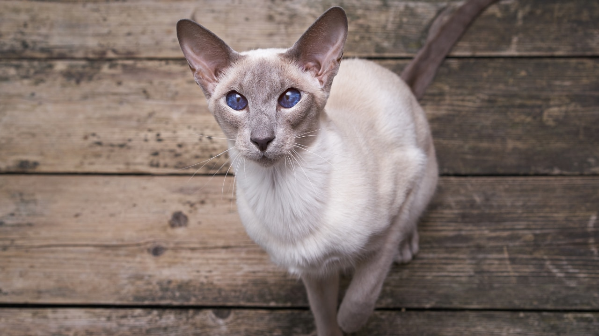

~Bengal Tiger~

This cat is one of the popular Indian cats known for its striking appearance with grey spots that resembles a leopard and golden eyes. This active and playful breed requires mental and physical stimulation to stay happy and healthy. This cat is one of the popular Indian cats known for its striking appearance with grey spots that resembles a leopard and golden eyes. This active and playful breed requires mental and physical stimulation to stay happy and healthy.
Key Features
Lifespan
Price : 20,000/-
~Siamese Cat~
Perhaps one of the most distinctive breeds, Siamese cats are most often cream-colored with grey-brown paws and icy blue eyes. Everything about Siamese is a bit pointier than other breeds, from the large, triangular ears to their delicate paws. They’ll often have the same grey-brown coloring on their ears and face. Siamese cats are now bred to come in different colors and patterns.